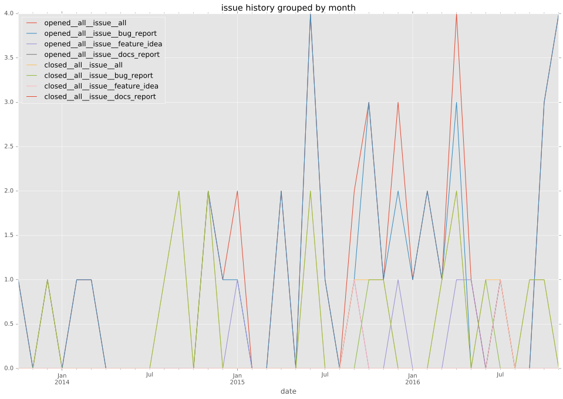
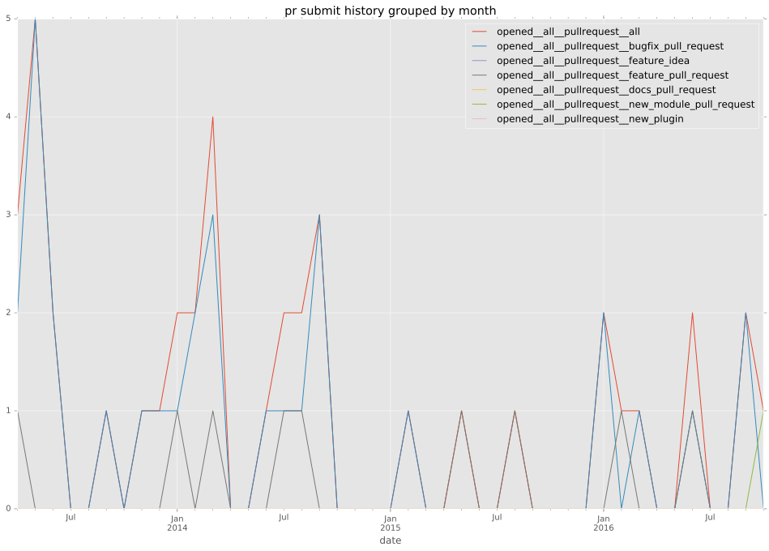

authors
- chrishoffman
maintainers
- shane-walker
contributors
- chrishoffman : 38 commits
- jimi-c : 7 commits
- dstokes : 6 commits
- jctanner : 5 commits
- inetfuture : 4 commits
- koenpunt : 3 commits
- tkellen : 2 commits
- mscherer : 2 commits
- mpdehaan : 2 commits
- jpmens : 2 commits
- xiaclo : 1 commits
- willthames : 1 commits
- stoned : 1 commits
- shane-walker : 1 commits
- nwjsmith : 1 commits
- joemaller : 1 commits
- hkariti : 1 commits
- christophebiocca : 1 commits
- abadger : 1 commits
total issue counts
feature pull request: 8
pullrequest: 39
bugfix pull request: 31
feature idea: 7
issue: 36
bug report: 29
issue history

pullrequest history

days open by issue type
bugfix pull request
count: 45
std: 44.0283425704
min: 0
max: 254
median: 1.0
mean: 17.2222222222
all
count: 72
std: 103.995120717
min: 0
max: 552
median: 2.0
mean: 50.5277777778
pullrequest
count: 0
std: nan
min: nan
max: nan
median: nan
mean: nan
feature pull request
count: 9
std: 119.447454742
min: 0
max: 356
median: 60.0
mean: 111.222222222
feature idea
count: 2
std: 390.322943215
min: 0
max: 552
median: 276.0
mean: 276.0
issue
count: 0
std: nan
min: nan
max: nan
median: nan
mean: nan
bug report
count: 16
std: 119.890992155
min: 0
max: 297
median: 1.5
mean: 81.875
closures grouped by total days open